CLIENTNUM Attrition_Flag Customer_Age Gender Dependent_count
1 768805383 Existing Customer 45 M 3
2 818770008 Existing Customer 49 F 5
3 713982108 Existing Customer 51 M 3
4 769911858 Existing Customer 40 F 4
5 709106358 Existing Customer 40 M 3
6 713061558 Existing Customer 44 M 2
Education_Level Marital_Status Income_Category Card_Category Months_on_book
1 High School Married $60K - $80K Blue 39
2 Graduate Single Less than $40K Blue 44
3 Graduate Married $80K - $120K Blue 36
4 High School Unknown Less than $40K Blue 34
5 Uneducated Married $60K - $80K Blue 21
6 Graduate Married $40K - $60K Blue 36
Total_Relationship_Count Months_Inactive_12_mon Contacts_Count_12_mon
1 5 1 3
2 6 1 2
3 4 1 0
4 3 4 1
5 5 1 0
6 3 1 2
Credit_Limit Total_Revolving_Bal Avg_Open_To_Buy Total_Amt_Chng_Q4_Q1
1 12691 777 11914 1.335
2 8256 864 7392 1.541
3 3418 0 3418 2.594
4 3313 2517 796 1.405
5 4716 0 4716 2.175
6 4010 1247 2763 1.376
Total_Trans_Amt Total_Trans_Ct Total_Ct_Chng_Q4_Q1 Avg_Utilization_Ratio
1 1144 42 1.625 0.061
2 1291 33 3.714 0.105
3 1887 20 2.333 0.000
4 1171 20 2.333 0.760
5 816 28 2.500 0.000
6 1088 24 0.846 0.311
Naive_Bayes_Classifier_Attrition_Flag_Card_Category_Contacts_Count_12_mon_Dependent_count_Education_Level_Months_Inactive_12_mon_1
1 9.3448e-05
2 5.6861e-05
3 2.1081e-05
4 1.3366e-04
5 2.1676e-05
6 5.5077e-05
Naive_Bayes_Classifier_Attrition_Flag_Card_Category_Contacts_Count_12_mon_Dependent_count_Education_Level_Months_Inactive_12_mon_2
1 0.99991
2 0.99994
3 0.99998
4 0.99987
5 0.99998
6 0.99994Preparación de los datos para el modelado
1 Descripción del problema
The dataset contains historical Steam sales data, updated weekly.
Columns include:
- Game Name: Title of the game on Steam
- Rating: Average Steam user rating (out of 10)
- #Reviews: Total number of reviews submitted by users
- Discount %: Current discount percentage applied to the game
- Price (€): Current discounted price in euros
- Original Price (€): Original price in euros before discount
- Release Date: Official release date of the game
- Windows: 1 if available on Windows, 0 otherwise
- Linux: 1 if available on Linux, 0 otherwise
- MacOS: 1 if available on macOS, 0 otherwise
- Fetched At: Timestamp of when the data was collected
A continuación vamos a detectar de que clase es cada u
clases <- sapply(datos, class)
varNum <- names(clases)[which(clases %in% c("numeric", "integer"))]
varCat <- names(clases)[which(clases %in% c("character", "factor"))]2 Data describe
2.1 Univariant analysis
2.1.1 Numerical
2.1.1.1 Description
library(psych)
psych::describe(datos) vars
CLIENTNUM 1
Attrition_Flag* 2
Customer_Age 3
Gender* 4
Dependent_count 5
Education_Level* 6
Marital_Status* 7
Income_Category* 8
Card_Category* 9
Months_on_book 10
Total_Relationship_Count 11
Months_Inactive_12_mon 12
Contacts_Count_12_mon 13
Credit_Limit 14
Total_Revolving_Bal 15
Avg_Open_To_Buy 16
Total_Amt_Chng_Q4_Q1 17
Total_Trans_Amt 18
Total_Trans_Ct 19
Total_Ct_Chng_Q4_Q1 20
Avg_Utilization_Ratio 21
Naive_Bayes_Classifier_Attrition_Flag_Card_Category_Contacts_Count_12_mon_Dependent_count_Education_Level_Months_Inactive_12_mon_1 22
Naive_Bayes_Classifier_Attrition_Flag_Card_Category_Contacts_Count_12_mon_Dependent_count_Education_Level_Months_Inactive_12_mon_2 23
n
CLIENTNUM 10127
Attrition_Flag* 10127
Customer_Age 10127
Gender* 10127
Dependent_count 10127
Education_Level* 10127
Marital_Status* 10127
Income_Category* 10127
Card_Category* 10127
Months_on_book 10127
Total_Relationship_Count 10127
Months_Inactive_12_mon 10127
Contacts_Count_12_mon 10127
Credit_Limit 10127
Total_Revolving_Bal 10127
Avg_Open_To_Buy 10127
Total_Amt_Chng_Q4_Q1 10127
Total_Trans_Amt 10127
Total_Trans_Ct 10127
Total_Ct_Chng_Q4_Q1 10127
Avg_Utilization_Ratio 10127
Naive_Bayes_Classifier_Attrition_Flag_Card_Category_Contacts_Count_12_mon_Dependent_count_Education_Level_Months_Inactive_12_mon_1 10127
Naive_Bayes_Classifier_Attrition_Flag_Card_Category_Contacts_Count_12_mon_Dependent_count_Education_Level_Months_Inactive_12_mon_2 10127
mean
CLIENTNUM 739177606.33
Attrition_Flag* 1.84
Customer_Age 46.33
Gender* 1.47
Dependent_count 2.35
Education_Level* 4.10
Marital_Status* 2.46
Income_Category* 3.86
Card_Category* 1.18
Months_on_book 35.93
Total_Relationship_Count 3.81
Months_Inactive_12_mon 2.34
Contacts_Count_12_mon 2.46
Credit_Limit 8631.95
Total_Revolving_Bal 1162.81
Avg_Open_To_Buy 7469.14
Total_Amt_Chng_Q4_Q1 0.76
Total_Trans_Amt 4404.09
Total_Trans_Ct 64.86
Total_Ct_Chng_Q4_Q1 0.71
Avg_Utilization_Ratio 0.27
Naive_Bayes_Classifier_Attrition_Flag_Card_Category_Contacts_Count_12_mon_Dependent_count_Education_Level_Months_Inactive_12_mon_1 0.16
Naive_Bayes_Classifier_Attrition_Flag_Card_Category_Contacts_Count_12_mon_Dependent_count_Education_Level_Months_Inactive_12_mon_2 0.84
sd
CLIENTNUM 36903783.45
Attrition_Flag* 0.37
Customer_Age 8.02
Gender* 0.50
Dependent_count 1.30
Education_Level* 1.83
Marital_Status* 0.74
Income_Category* 1.50
Card_Category* 0.69
Months_on_book 7.99
Total_Relationship_Count 1.55
Months_Inactive_12_mon 1.01
Contacts_Count_12_mon 1.11
Credit_Limit 9088.78
Total_Revolving_Bal 814.99
Avg_Open_To_Buy 9090.69
Total_Amt_Chng_Q4_Q1 0.22
Total_Trans_Amt 3397.13
Total_Trans_Ct 23.47
Total_Ct_Chng_Q4_Q1 0.24
Avg_Utilization_Ratio 0.28
Naive_Bayes_Classifier_Attrition_Flag_Card_Category_Contacts_Count_12_mon_Dependent_count_Education_Level_Months_Inactive_12_mon_1 0.37
Naive_Bayes_Classifier_Attrition_Flag_Card_Category_Contacts_Count_12_mon_Dependent_count_Education_Level_Months_Inactive_12_mon_2 0.37
median
CLIENTNUM 717926358.00
Attrition_Flag* 2.00
Customer_Age 46.00
Gender* 1.00
Dependent_count 2.00
Education_Level* 4.00
Marital_Status* 2.00
Income_Category* 4.00
Card_Category* 1.00
Months_on_book 36.00
Total_Relationship_Count 4.00
Months_Inactive_12_mon 2.00
Contacts_Count_12_mon 2.00
Credit_Limit 4549.00
Total_Revolving_Bal 1276.00
Avg_Open_To_Buy 3474.00
Total_Amt_Chng_Q4_Q1 0.74
Total_Trans_Amt 3899.00
Total_Trans_Ct 67.00
Total_Ct_Chng_Q4_Q1 0.70
Avg_Utilization_Ratio 0.18
Naive_Bayes_Classifier_Attrition_Flag_Card_Category_Contacts_Count_12_mon_Dependent_count_Education_Level_Months_Inactive_12_mon_1 0.00
Naive_Bayes_Classifier_Attrition_Flag_Card_Category_Contacts_Count_12_mon_Dependent_count_Education_Level_Months_Inactive_12_mon_2 1.00
trimmed
CLIENTNUM 733606202.47
Attrition_Flag* 1.92
Customer_Age 46.35
Gender* 1.46
Dependent_count 2.37
Education_Level* 4.12
Marital_Status* 2.45
Income_Category* 3.92
Card_Category* 1.00
Months_on_book 35.99
Total_Relationship_Count 3.88
Months_Inactive_12_mon 2.29
Contacts_Count_12_mon 2.46
Credit_Limit 6685.09
Total_Revolving_Bal 1148.50
Avg_Open_To_Buy 5514.94
Total_Amt_Chng_Q4_Q1 0.74
Total_Trans_Amt 3707.92
Total_Trans_Ct 64.30
Total_Ct_Chng_Q4_Q1 0.70
Avg_Utilization_Ratio 0.24
Naive_Bayes_Classifier_Attrition_Flag_Card_Category_Contacts_Count_12_mon_Dependent_count_Education_Level_Months_Inactive_12_mon_1 0.08
Naive_Bayes_Classifier_Attrition_Flag_Card_Category_Contacts_Count_12_mon_Dependent_count_Education_Level_Months_Inactive_12_mon_2 0.92
mad
CLIENTNUM 9411100.02
Attrition_Flag* 0.00
Customer_Age 8.90
Gender* 0.00
Dependent_count 1.48
Education_Level* 1.48
Marital_Status* 1.48
Income_Category* 1.48
Card_Category* 0.00
Months_on_book 5.93
Total_Relationship_Count 1.48
Months_Inactive_12_mon 1.48
Contacts_Count_12_mon 1.48
Credit_Limit 3844.38
Total_Revolving_Bal 876.22
Avg_Open_To_Buy 3951.13
Total_Amt_Chng_Q4_Q1 0.17
Total_Trans_Amt 1939.24
Total_Trans_Ct 25.20
Total_Ct_Chng_Q4_Q1 0.18
Avg_Utilization_Ratio 0.26
Naive_Bayes_Classifier_Attrition_Flag_Card_Category_Contacts_Count_12_mon_Dependent_count_Education_Level_Months_Inactive_12_mon_1 0.00
Naive_Bayes_Classifier_Attrition_Flag_Card_Category_Contacts_Count_12_mon_Dependent_count_Education_Level_Months_Inactive_12_mon_2 0.00
min
CLIENTNUM 708082083.0
Attrition_Flag* 1.0
Customer_Age 26.0
Gender* 1.0
Dependent_count 0.0
Education_Level* 1.0
Marital_Status* 1.0
Income_Category* 1.0
Card_Category* 1.0
Months_on_book 13.0
Total_Relationship_Count 1.0
Months_Inactive_12_mon 0.0
Contacts_Count_12_mon 0.0
Credit_Limit 1438.3
Total_Revolving_Bal 0.0
Avg_Open_To_Buy 3.0
Total_Amt_Chng_Q4_Q1 0.0
Total_Trans_Amt 510.0
Total_Trans_Ct 10.0
Total_Ct_Chng_Q4_Q1 0.0
Avg_Utilization_Ratio 0.0
Naive_Bayes_Classifier_Attrition_Flag_Card_Category_Contacts_Count_12_mon_Dependent_count_Education_Level_Months_Inactive_12_mon_1 0.0
Naive_Bayes_Classifier_Attrition_Flag_Card_Category_Contacts_Count_12_mon_Dependent_count_Education_Level_Months_Inactive_12_mon_2 0.0
max
CLIENTNUM 828343083.00
Attrition_Flag* 2.00
Customer_Age 73.00
Gender* 2.00
Dependent_count 5.00
Education_Level* 7.00
Marital_Status* 4.00
Income_Category* 6.00
Card_Category* 4.00
Months_on_book 56.00
Total_Relationship_Count 6.00
Months_Inactive_12_mon 6.00
Contacts_Count_12_mon 6.00
Credit_Limit 34516.00
Total_Revolving_Bal 2517.00
Avg_Open_To_Buy 34516.00
Total_Amt_Chng_Q4_Q1 3.40
Total_Trans_Amt 18484.00
Total_Trans_Ct 139.00
Total_Ct_Chng_Q4_Q1 3.71
Avg_Utilization_Ratio 1.00
Naive_Bayes_Classifier_Attrition_Flag_Card_Category_Contacts_Count_12_mon_Dependent_count_Education_Level_Months_Inactive_12_mon_1 1.00
Naive_Bayes_Classifier_Attrition_Flag_Card_Category_Contacts_Count_12_mon_Dependent_count_Education_Level_Months_Inactive_12_mon_2 1.00
range
CLIENTNUM 1.20261e+08
Attrition_Flag* 1.00000e+00
Customer_Age 4.70000e+01
Gender* 1.00000e+00
Dependent_count 5.00000e+00
Education_Level* 6.00000e+00
Marital_Status* 3.00000e+00
Income_Category* 5.00000e+00
Card_Category* 3.00000e+00
Months_on_book 4.30000e+01
Total_Relationship_Count 5.00000e+00
Months_Inactive_12_mon 6.00000e+00
Contacts_Count_12_mon 6.00000e+00
Credit_Limit 3.30777e+04
Total_Revolving_Bal 2.51700e+03
Avg_Open_To_Buy 3.45130e+04
Total_Amt_Chng_Q4_Q1 3.40000e+00
Total_Trans_Amt 1.79740e+04
Total_Trans_Ct 1.29000e+02
Total_Ct_Chng_Q4_Q1 3.71000e+00
Avg_Utilization_Ratio 1.00000e+00
Naive_Bayes_Classifier_Attrition_Flag_Card_Category_Contacts_Count_12_mon_Dependent_count_Education_Level_Months_Inactive_12_mon_1 1.00000e+00
Naive_Bayes_Classifier_Attrition_Flag_Card_Category_Contacts_Count_12_mon_Dependent_count_Education_Level_Months_Inactive_12_mon_2 1.00000e+00
skew
CLIENTNUM 1.00
Attrition_Flag* -1.85
Customer_Age -0.03
Gender* 0.12
Dependent_count -0.02
Education_Level* 0.15
Marital_Status* 0.13
Income_Category* -0.39
Card_Category* 3.73
Months_on_book -0.11
Total_Relationship_Count -0.16
Months_Inactive_12_mon 0.63
Contacts_Count_12_mon 0.01
Credit_Limit 1.67
Total_Revolving_Bal -0.15
Avg_Open_To_Buy 1.66
Total_Amt_Chng_Q4_Q1 1.73
Total_Trans_Amt 2.04
Total_Trans_Ct 0.15
Total_Ct_Chng_Q4_Q1 2.06
Avg_Utilization_Ratio 0.72
Naive_Bayes_Classifier_Attrition_Flag_Card_Category_Contacts_Count_12_mon_Dependent_count_Education_Level_Months_Inactive_12_mon_1 1.85
Naive_Bayes_Classifier_Attrition_Flag_Card_Category_Contacts_Count_12_mon_Dependent_count_Education_Level_Months_Inactive_12_mon_2 -1.85
kurtosis
CLIENTNUM -0.62
Attrition_Flag* 1.41
Customer_Age -0.29
Gender* -1.99
Dependent_count -0.68
Education_Level* -0.96
Marital_Status* -0.28
Income_Category* -1.07
Card_Category* 12.15
Months_on_book 0.40
Total_Relationship_Count -1.01
Months_Inactive_12_mon 1.10
Contacts_Count_12_mon 0.00
Credit_Limit 1.81
Total_Revolving_Bal -1.15
Avg_Open_To_Buy 1.80
Total_Amt_Chng_Q4_Q1 9.99
Total_Trans_Amt 3.89
Total_Trans_Ct -0.37
Total_Ct_Chng_Q4_Q1 15.68
Avg_Utilization_Ratio -0.80
Naive_Bayes_Classifier_Attrition_Flag_Card_Category_Contacts_Count_12_mon_Dependent_count_Education_Level_Months_Inactive_12_mon_1 1.42
Naive_Bayes_Classifier_Attrition_Flag_Card_Category_Contacts_Count_12_mon_Dependent_count_Education_Level_Months_Inactive_12_mon_2 1.42
se
CLIENTNUM 366716.53
Attrition_Flag* 0.00
Customer_Age 0.08
Gender* 0.00
Dependent_count 0.01
Education_Level* 0.02
Marital_Status* 0.01
Income_Category* 0.01
Card_Category* 0.01
Months_on_book 0.08
Total_Relationship_Count 0.02
Months_Inactive_12_mon 0.01
Contacts_Count_12_mon 0.01
Credit_Limit 90.32
Total_Revolving_Bal 8.10
Avg_Open_To_Buy 90.34
Total_Amt_Chng_Q4_Q1 0.00
Total_Trans_Amt 33.76
Total_Trans_Ct 0.23
Total_Ct_Chng_Q4_Q1 0.00
Avg_Utilization_Ratio 0.00
Naive_Bayes_Classifier_Attrition_Flag_Card_Category_Contacts_Count_12_mon_Dependent_count_Education_Level_Months_Inactive_12_mon_1 0.00
Naive_Bayes_Classifier_Attrition_Flag_Card_Category_Contacts_Count_12_mon_Dependent_count_Education_Level_Months_Inactive_12_mon_2 0.002.1.1.2 Graphic
for (var in varNum) {
hist(datos[, var], main = paste0("Histograma variable ", var))
boxplot(datos[, var], main = paste0("Boxplot variable ", var))
}
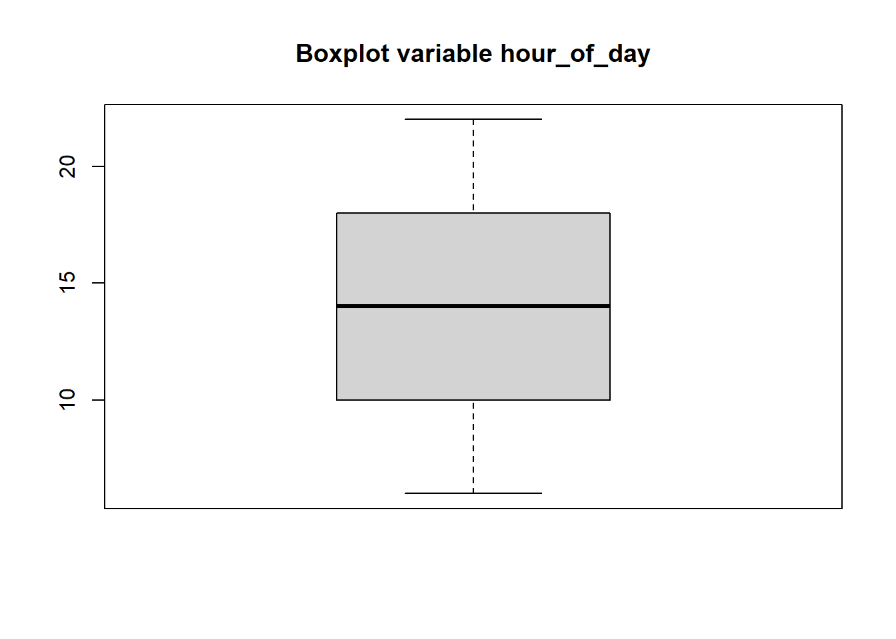


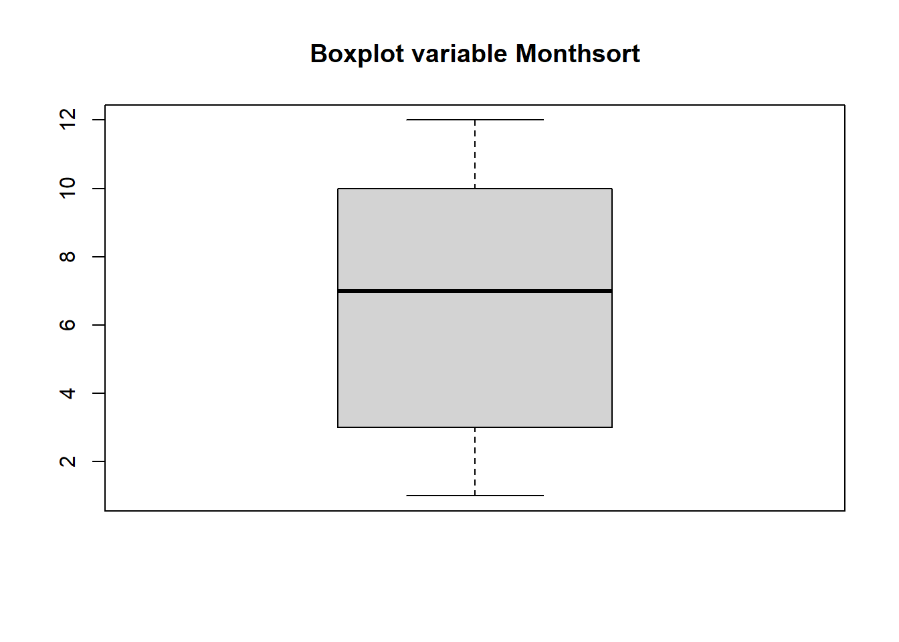
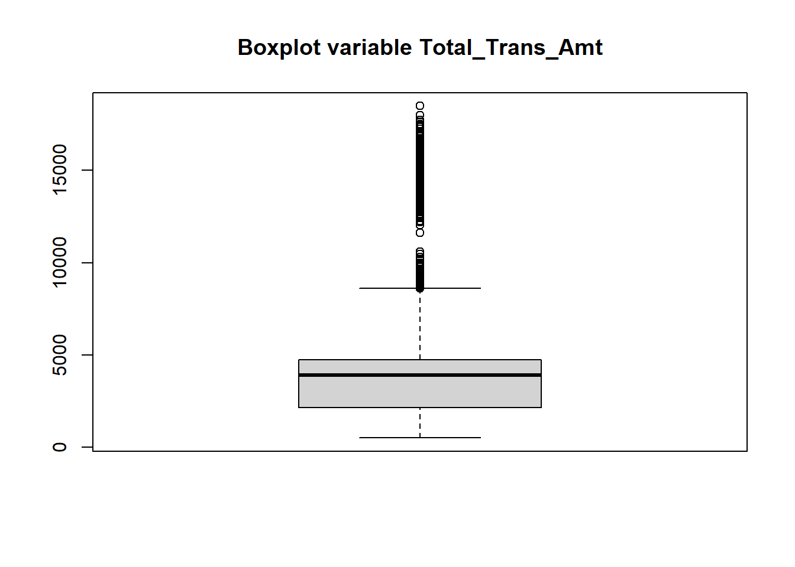
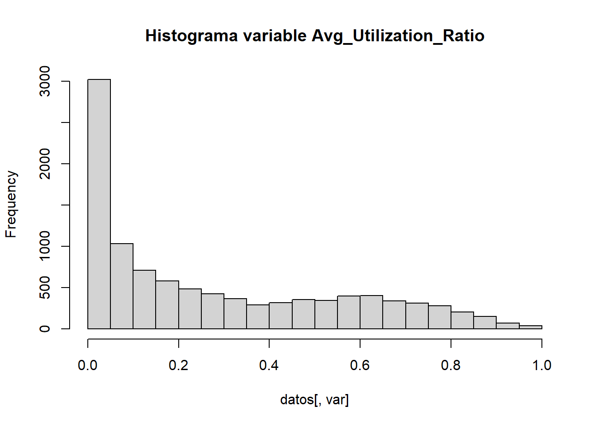
library(ggplot2)
Adjuntando el paquete: 'ggplot2'The following objects are masked from 'package:psych':
%+%, alphafor (var in varNum) {
# Histograma
grafico <- ggplot(datos, aes(x = get(var))) +
geom_histogram(aes(y = ..density..), colour = "black", fill = "white")+
geom_density(alpha=.2, fill="#FF6666") +
geom_vline(aes(xintercept = mean(get(var))),
color="blue", linetype = "dashed", linewidth = 1)
print(grafico)
# Boxplot
grafico2 <- ggplot(datos, aes(x=get(var))) +
geom_boxplot(outlier.colour="red", outlier.shape=8,
outlier.size=4)
print(grafico2)
}Warning: The dot-dot notation (`..density..`) was deprecated in ggplot2 3.4.0.
ℹ Please use `after_stat(density)` instead.`stat_bin()` using `bins = 30`. Pick better value with `binwidth`.

`stat_bin()` using `bins = 30`. Pick better value with `binwidth`.
`stat_bin()` using `bins = 30`. Pick better value with `binwidth`.
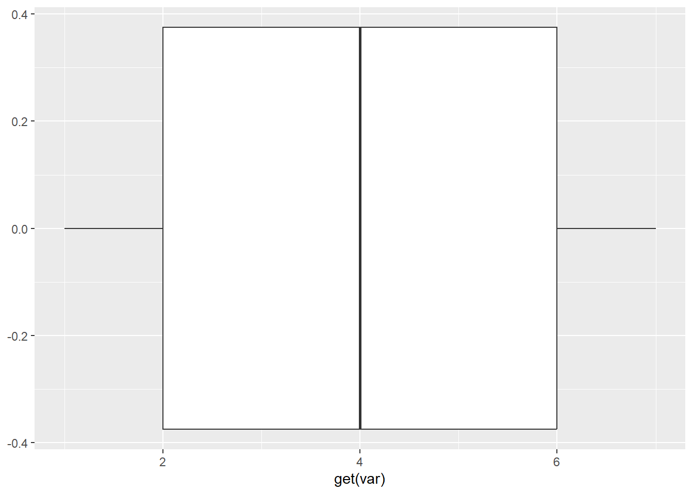
`stat_bin()` using `bins = 30`. Pick better value with `binwidth`.

`stat_bin()` using `bins = 30`. Pick better value with `binwidth`.`stat_bin()` using `bins = 30`. Pick better value with `binwidth`.
`stat_bin()` using `bins = 30`. Pick better value with `binwidth`.`stat_bin()` using `bins = 30`. Pick better value with `binwidth`.`stat_bin()` using `bins = 30`. Pick better value with `binwidth`.
`stat_bin()` using `bins = 30`. Pick better value with `binwidth`.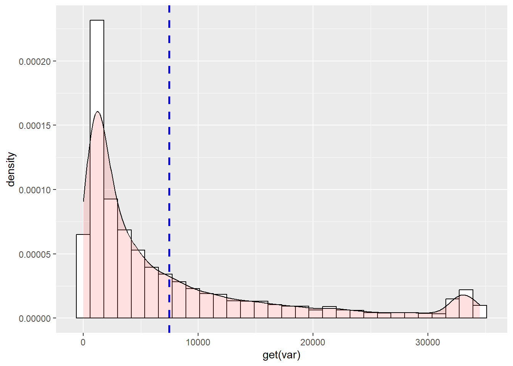
`stat_bin()` using `bins = 30`. Pick better value with `binwidth`.`stat_bin()` using `bins = 30`. Pick better value with `binwidth`.
`stat_bin()` using `bins = 30`. Pick better value with `binwidth`.`stat_bin()` using `bins = 30`. Pick better value with `binwidth`.`stat_bin()` using `bins = 30`. Pick better value with `binwidth`.`stat_bin()` using `bins = 30`. Pick better value with `binwidth`.`stat_bin()` using `bins = 30`. Pick better value with `binwidth`.2.1.2 Categorical
2.1.2.1 Description
for (var in varCat) {
tablaAbs <- data.frame(table(datos[, var]))
tablaFreq <- data.frame(table(datos[, var])/sum(table(datos[, var])))
m <- match(tablaAbs$Var1, tablaFreq$Var1)
tablaAbs[, "FreqRel"] <- tablaFreq[m, "Freq"]
colnames(tablaAbs) <- c("Categoria", "FreqAbs", "FreqRel")
cat("===============", var, "===================================\n")
print(tablaAbs)
cat("==================================================\n")
}=============== Attrition_Flag ===================================
Categoria FreqAbs FreqRel
1 Attrited Customer 1627 0.1606596
2 Existing Customer 8500 0.8393404
==================================================
=============== Gender ===================================
Categoria FreqAbs FreqRel
1 F 5358 0.5290807
2 M 4769 0.4709193
==================================================
=============== Education_Level ===================================
Categoria FreqAbs FreqRel
1 College 1013 0.10002962
2 Doctorate 451 0.04453441
3 Graduate 3128 0.30887726
4 High School 2013 0.19877555
5 Post-Graduate 516 0.05095290
6 Uneducated 1487 0.14683519
7 Unknown 1519 0.14999506
==================================================
=============== Marital_Status ===================================
Categoria FreqAbs FreqRel
1 Divorced 748 0.07386195
2 Married 4687 0.46282216
3 Single 3943 0.38935519
4 Unknown 749 0.07396070
==================================================
=============== Income_Category ===================================
Categoria FreqAbs FreqRel
1 $120K + 727 0.07178829
2 $40K - $60K 1790 0.17675521
3 $60K - $80K 1402 0.13844179
4 $80K - $120K 1535 0.15157500
5 Less than $40K 3561 0.35163425
6 Unknown 1112 0.10980547
==================================================
=============== Card_Category ===================================
Categoria FreqAbs FreqRel
1 Blue 9436 0.931766565
2 Gold 116 0.011454528
3 Platinum 20 0.001974919
4 Silver 555 0.054803989
==================================================2.1.2.2 Graphic
for (var in varCat) {
barplot(table(datos[, var]))
}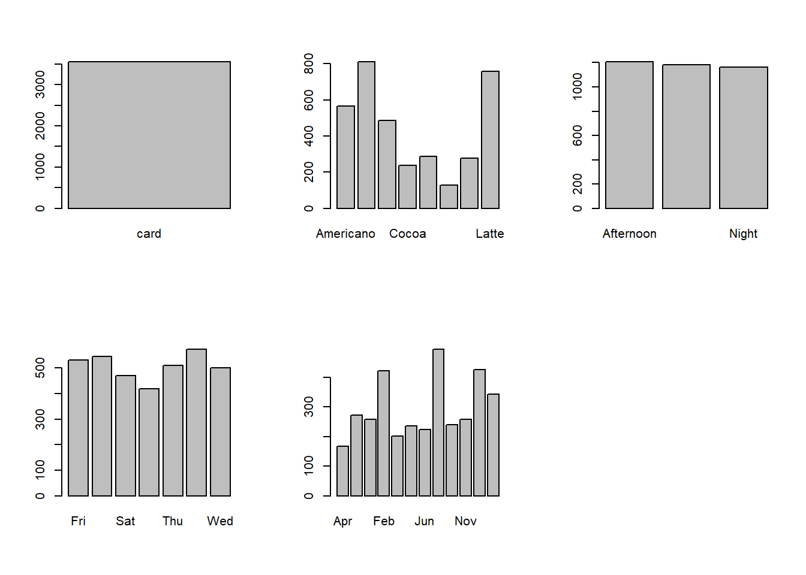


for (var in varCat) {
tabla <- data.frame(table(datos[, var])/sum(table(datos[, var])))
p <- ggplot(data = tabla, aes(x = Var1, y = Freq)) +
geom_bar(stat = "identity", fill = "steelblue")+
geom_text(aes(label=paste0(round(Freq, 2)*100, "%")), vjust=1.6, color="white", size=3.5)+
theme_minimal()
print(p)
}

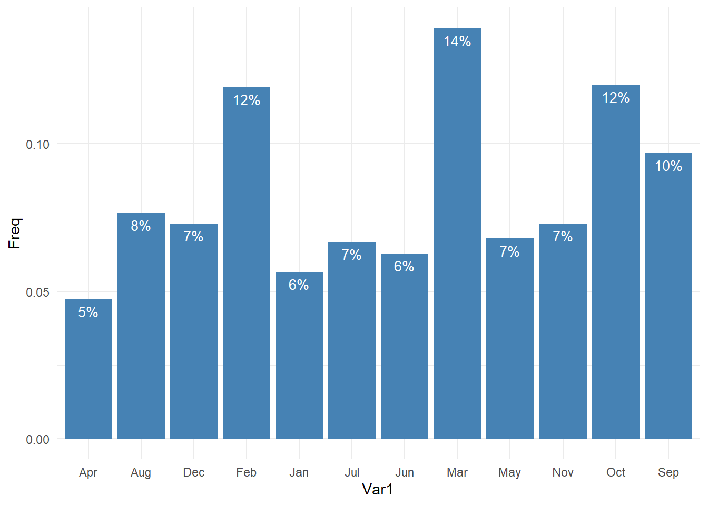
2.2 Bivariant analysis
2.2.1 Numerical vs. numerical
2.2.1.1 Description
cor(datos[, varNum]) CLIENTNUM
CLIENTNUM 1.0000000000
Customer_Age 0.0076126512
Dependent_count 0.0067717372
Months_on_book 0.1345878309
Total_Relationship_Count 0.0069069051
Months_Inactive_12_mon 0.0057285276
Contacts_Count_12_mon 0.0056944278
Credit_Limit 0.0057076227
Total_Revolving_Bal 0.0008245041
Avg_Open_To_Buy 0.0056325068
Total_Amt_Chng_Q4_Q1 0.0173693399
Total_Trans_Amt -0.0196917088
Total_Trans_Ct -0.0029610131
Total_Ct_Chng_Q4_Q1 0.0076955755
Avg_Utilization_Ratio 0.0002659600
Naive_Bayes_Classifier_Attrition_Flag_Card_Category_Contacts_Count_12_mon_Dependent_count_Education_Level_Months_Inactive_12_mon_1 -0.0464105098
Naive_Bayes_Classifier_Attrition_Flag_Card_Category_Contacts_Count_12_mon_Dependent_count_Education_Level_Months_Inactive_12_mon_2 0.0464104749
Customer_Age
CLIENTNUM 0.007612651
Customer_Age 1.000000000
Dependent_count -0.122253752
Months_on_book 0.788912359
Total_Relationship_Count -0.010931069
Months_Inactive_12_mon 0.054360999
Contacts_Count_12_mon -0.018451855
Credit_Limit 0.002476227
Total_Revolving_Bal 0.014779895
Avg_Open_To_Buy 0.001150678
Total_Amt_Chng_Q4_Q1 -0.062042092
Total_Trans_Amt -0.046446491
Total_Trans_Ct -0.067096864
Total_Ct_Chng_Q4_Q1 -0.012142548
Avg_Utilization_Ratio 0.007114222
Naive_Bayes_Classifier_Attrition_Flag_Card_Category_Contacts_Count_12_mon_Dependent_count_Education_Level_Months_Inactive_12_mon_1 0.018188652
Naive_Bayes_Classifier_Attrition_Flag_Card_Category_Contacts_Count_12_mon_Dependent_count_Education_Level_Months_Inactive_12_mon_2 -0.018188610
Dependent_count
CLIENTNUM 0.006771737
Customer_Age -0.122253752
Dependent_count 1.000000000
Months_on_book -0.103062281
Total_Relationship_Count -0.039076389
Months_Inactive_12_mon -0.010767918
Contacts_Count_12_mon -0.040504960
Credit_Limit 0.068064600
Total_Revolving_Bal -0.002688146
Avg_Open_To_Buy 0.068291304
Total_Amt_Chng_Q4_Q1 -0.035439429
Total_Trans_Amt 0.025046238
Total_Trans_Ct 0.049912477
Total_Ct_Chng_Q4_Q1 0.011087181
Avg_Utilization_Ratio -0.037135159
Naive_Bayes_Classifier_Attrition_Flag_Card_Category_Contacts_Count_12_mon_Dependent_count_Education_Level_Months_Inactive_12_mon_1 0.019189017
Naive_Bayes_Classifier_Attrition_Flag_Card_Category_Contacts_Count_12_mon_Dependent_count_Education_Level_Months_Inactive_12_mon_2 -0.019189355
Months_on_book
CLIENTNUM 0.134587831
Customer_Age 0.788912359
Dependent_count -0.103062281
Months_on_book 1.000000000
Total_Relationship_Count -0.009203080
Months_Inactive_12_mon 0.074163514
Contacts_Count_12_mon -0.010774479
Credit_Limit 0.007507009
Total_Revolving_Bal 0.008622804
Avg_Open_To_Buy 0.006732392
Total_Amt_Chng_Q4_Q1 -0.048959320
Total_Trans_Amt -0.038590629
Total_Trans_Ct -0.049819084
Total_Ct_Chng_Q4_Q1 -0.014071671
Avg_Utilization_Ratio -0.007540837
Naive_Bayes_Classifier_Attrition_Flag_Card_Category_Contacts_Count_12_mon_Dependent_count_Education_Level_Months_Inactive_12_mon_1 0.013693498
Naive_Bayes_Classifier_Attrition_Flag_Card_Category_Contacts_Count_12_mon_Dependent_count_Education_Level_Months_Inactive_12_mon_2 -0.013693505
Total_Relationship_Count
CLIENTNUM 0.006906905
Customer_Age -0.010931069
Dependent_count -0.039076389
Months_on_book -0.009203080
Total_Relationship_Count 1.000000000
Months_Inactive_12_mon -0.003675377
Contacts_Count_12_mon 0.055203163
Credit_Limit -0.071385817
Total_Revolving_Bal 0.013725849
Avg_Open_To_Buy -0.072601363
Total_Amt_Chng_Q4_Q1 0.050118644
Total_Trans_Amt -0.347228880
Total_Trans_Ct -0.241890850
Total_Ct_Chng_Q4_Q1 0.040831148
Avg_Utilization_Ratio 0.067662878
Naive_Bayes_Classifier_Attrition_Flag_Card_Category_Contacts_Count_12_mon_Dependent_count_Education_Level_Months_Inactive_12_mon_1 -0.149980622
Naive_Bayes_Classifier_Attrition_Flag_Card_Category_Contacts_Count_12_mon_Dependent_count_Education_Level_Months_Inactive_12_mon_2 0.149980621
Months_Inactive_12_mon
CLIENTNUM 0.005728528
Customer_Age 0.054360999
Dependent_count -0.010767918
Months_on_book 0.074163514
Total_Relationship_Count -0.003675377
Months_Inactive_12_mon 1.000000000
Contacts_Count_12_mon 0.029492910
Credit_Limit -0.020393791
Total_Revolving_Bal -0.042209609
Avg_Open_To_Buy -0.016605384
Total_Amt_Chng_Q4_Q1 -0.032246712
Total_Trans_Amt -0.036982425
Total_Trans_Ct -0.042787039
Total_Ct_Chng_Q4_Q1 -0.038989338
Avg_Utilization_Ratio -0.007502633
Naive_Bayes_Classifier_Attrition_Flag_Card_Category_Contacts_Count_12_mon_Dependent_count_Education_Level_Months_Inactive_12_mon_1 0.153452118
Naive_Bayes_Classifier_Attrition_Flag_Card_Category_Contacts_Count_12_mon_Dependent_count_Education_Level_Months_Inactive_12_mon_2 -0.153451919
Contacts_Count_12_mon
CLIENTNUM 0.005694428
Customer_Age -0.018451855
Dependent_count -0.040504960
Months_on_book -0.010774479
Total_Relationship_Count 0.055203163
Months_Inactive_12_mon 0.029492910
Contacts_Count_12_mon 1.000000000
Credit_Limit 0.020817012
Total_Revolving_Bal -0.053912731
Avg_Open_To_Buy 0.025645961
Total_Amt_Chng_Q4_Q1 -0.024445115
Total_Trans_Amt -0.112773929
Total_Trans_Ct -0.152212605
Total_Ct_Chng_Q4_Q1 -0.094996916
Avg_Utilization_Ratio -0.055471285
Naive_Bayes_Classifier_Attrition_Flag_Card_Category_Contacts_Count_12_mon_Dependent_count_Education_Level_Months_Inactive_12_mon_1 0.205772074
Naive_Bayes_Classifier_Attrition_Flag_Card_Category_Contacts_Count_12_mon_Dependent_count_Education_Level_Months_Inactive_12_mon_2 -0.205772484
Credit_Limit
CLIENTNUM 0.005707623
Customer_Age 0.002476227
Dependent_count 0.068064600
Months_on_book 0.007507009
Total_Relationship_Count -0.071385817
Months_Inactive_12_mon -0.020393791
Contacts_Count_12_mon 0.020817012
Credit_Limit 1.000000000
Total_Revolving_Bal 0.042492607
Avg_Open_To_Buy 0.995980544
Total_Amt_Chng_Q4_Q1 0.012812536
Total_Trans_Amt 0.171730150
Total_Trans_Ct 0.075926912
Total_Ct_Chng_Q4_Q1 -0.002019850
Avg_Utilization_Ratio -0.482965071
Naive_Bayes_Classifier_Attrition_Flag_Card_Category_Contacts_Count_12_mon_Dependent_count_Education_Level_Months_Inactive_12_mon_1 -0.023853413
Naive_Bayes_Classifier_Attrition_Flag_Card_Category_Contacts_Count_12_mon_Dependent_count_Education_Level_Months_Inactive_12_mon_2 0.023853482
Total_Revolving_Bal
CLIENTNUM 0.0008245041
Customer_Age 0.0147798946
Dependent_count -0.0026881459
Months_on_book 0.0086228045
Total_Relationship_Count 0.0137258489
Months_Inactive_12_mon -0.0422096088
Contacts_Count_12_mon -0.0539127312
Credit_Limit 0.0424926073
Total_Revolving_Bal 1.0000000000
Avg_Open_To_Buy -0.0471671279
Total_Amt_Chng_Q4_Q1 0.0581736645
Total_Trans_Amt 0.0643704770
Total_Trans_Ct 0.0560604930
Total_Ct_Chng_Q4_Q1 0.0898610078
Avg_Utilization_Ratio 0.6240219910
Naive_Bayes_Classifier_Attrition_Flag_Card_Category_Contacts_Count_12_mon_Dependent_count_Education_Level_Months_Inactive_12_mon_1 -0.2630325068
Naive_Bayes_Classifier_Attrition_Flag_Card_Category_Contacts_Count_12_mon_Dependent_count_Education_Level_Months_Inactive_12_mon_2 0.2630324750
Avg_Open_To_Buy
CLIENTNUM 0.0056325068
Customer_Age 0.0011506779
Dependent_count 0.0682913039
Months_on_book 0.0067323916
Total_Relationship_Count -0.0726013628
Months_Inactive_12_mon -0.0166053838
Contacts_Count_12_mon 0.0256459612
Credit_Limit 0.9959805439
Total_Revolving_Bal -0.0471671279
Avg_Open_To_Buy 1.0000000000
Total_Amt_Chng_Q4_Q1 0.0075945292
Total_Trans_Amt 0.1659232285
Total_Trans_Ct 0.0708851016
Total_Ct_Chng_Q4_Q1 -0.0100755384
Avg_Utilization_Ratio -0.5388077476
Naive_Bayes_Classifier_Attrition_Flag_Card_Category_Contacts_Count_12_mon_Dependent_count_Education_Level_Months_Inactive_12_mon_1 -0.0002673269
Naive_Bayes_Classifier_Attrition_Flag_Card_Category_Contacts_Count_12_mon_Dependent_count_Education_Level_Months_Inactive_12_mon_2 0.0002673980
Total_Amt_Chng_Q4_Q1
CLIENTNUM 0.017369340
Customer_Age -0.062042092
Dependent_count -0.035439429
Months_on_book -0.048959320
Total_Relationship_Count 0.050118644
Months_Inactive_12_mon -0.032246712
Contacts_Count_12_mon -0.024445115
Credit_Limit 0.012812536
Total_Revolving_Bal 0.058173664
Avg_Open_To_Buy 0.007594529
Total_Amt_Chng_Q4_Q1 1.000000000
Total_Trans_Amt 0.039677592
Total_Trans_Ct 0.005468567
Total_Ct_Chng_Q4_Q1 0.384189256
Avg_Utilization_Ratio 0.035234835
Naive_Bayes_Classifier_Attrition_Flag_Card_Category_Contacts_Count_12_mon_Dependent_count_Education_Level_Months_Inactive_12_mon_1 -0.131207399
Naive_Bayes_Classifier_Attrition_Flag_Card_Category_Contacts_Count_12_mon_Dependent_count_Education_Level_Months_Inactive_12_mon_2 0.131207433
Total_Trans_Amt
CLIENTNUM -0.01969171
Customer_Age -0.04644649
Dependent_count 0.02504624
Months_on_book -0.03859063
Total_Relationship_Count -0.34722888
Months_Inactive_12_mon -0.03698243
Contacts_Count_12_mon -0.11277393
Credit_Limit 0.17173015
Total_Revolving_Bal 0.06437048
Avg_Open_To_Buy 0.16592323
Total_Amt_Chng_Q4_Q1 0.03967759
Total_Trans_Amt 1.00000000
Total_Trans_Ct 0.80719203
Total_Ct_Chng_Q4_Q1 0.08558098
Avg_Utilization_Ratio -0.08303425
Naive_Bayes_Classifier_Attrition_Flag_Card_Category_Contacts_Count_12_mon_Dependent_count_Education_Level_Months_Inactive_12_mon_1 -0.16864202
Naive_Bayes_Classifier_Attrition_Flag_Card_Category_Contacts_Count_12_mon_Dependent_count_Education_Level_Months_Inactive_12_mon_2 0.16864217
Total_Trans_Ct
CLIENTNUM -0.002961013
Customer_Age -0.067096864
Dependent_count 0.049912477
Months_on_book -0.049819084
Total_Relationship_Count -0.241890850
Months_Inactive_12_mon -0.042787039
Contacts_Count_12_mon -0.152212605
Credit_Limit 0.075926912
Total_Revolving_Bal 0.056060493
Avg_Open_To_Buy 0.070885102
Total_Amt_Chng_Q4_Q1 0.005468567
Total_Trans_Amt 0.807192035
Total_Trans_Ct 1.000000000
Total_Ct_Chng_Q4_Q1 0.112324440
Avg_Utilization_Ratio 0.002838112
Naive_Bayes_Classifier_Attrition_Flag_Card_Category_Contacts_Count_12_mon_Dependent_count_Education_Level_Months_Inactive_12_mon_1 -0.371403353
Naive_Bayes_Classifier_Attrition_Flag_Card_Category_Contacts_Count_12_mon_Dependent_count_Education_Level_Months_Inactive_12_mon_2 0.371403431
Total_Ct_Chng_Q4_Q1
CLIENTNUM 0.007695575
Customer_Age -0.012142548
Dependent_count 0.011087181
Months_on_book -0.014071671
Total_Relationship_Count 0.040831148
Months_Inactive_12_mon -0.038989338
Contacts_Count_12_mon -0.094996916
Credit_Limit -0.002019850
Total_Revolving_Bal 0.089861008
Avg_Open_To_Buy -0.010075538
Total_Amt_Chng_Q4_Q1 0.384189256
Total_Trans_Amt 0.085580976
Total_Trans_Ct 0.112324440
Total_Ct_Chng_Q4_Q1 1.000000000
Avg_Utilization_Ratio 0.074143210
Naive_Bayes_Classifier_Attrition_Flag_Card_Category_Contacts_Count_12_mon_Dependent_count_Education_Level_Months_Inactive_12_mon_1 -0.290114955
Naive_Bayes_Classifier_Attrition_Flag_Card_Category_Contacts_Count_12_mon_Dependent_count_Education_Level_Months_Inactive_12_mon_2 0.290115136
Avg_Utilization_Ratio
CLIENTNUM 0.000265960
Customer_Age 0.007114222
Dependent_count -0.037135159
Months_on_book -0.007540837
Total_Relationship_Count 0.067662878
Months_Inactive_12_mon -0.007502633
Contacts_Count_12_mon -0.055471285
Credit_Limit -0.482965071
Total_Revolving_Bal 0.624021991
Avg_Open_To_Buy -0.538807748
Total_Amt_Chng_Q4_Q1 0.035234835
Total_Trans_Amt -0.083034246
Total_Trans_Ct 0.002838112
Total_Ct_Chng_Q4_Q1 0.074143210
Avg_Utilization_Ratio 1.000000000
Naive_Bayes_Classifier_Attrition_Flag_Card_Category_Contacts_Count_12_mon_Dependent_count_Education_Level_Months_Inactive_12_mon_1 -0.178404795
Naive_Bayes_Classifier_Attrition_Flag_Card_Category_Contacts_Count_12_mon_Dependent_count_Education_Level_Months_Inactive_12_mon_2 0.178404713
Naive_Bayes_Classifier_Attrition_Flag_Card_Category_Contacts_Count_12_mon_Dependent_count_Education_Level_Months_Inactive_12_mon_1
CLIENTNUM -0.0464105098
Customer_Age 0.0181886525
Dependent_count 0.0191890165
Months_on_book 0.0136934978
Total_Relationship_Count -0.1499806221
Months_Inactive_12_mon 0.1534521178
Contacts_Count_12_mon 0.2057720744
Credit_Limit -0.0238534134
Total_Revolving_Bal -0.2630325068
Avg_Open_To_Buy -0.0002673269
Total_Amt_Chng_Q4_Q1 -0.1312073989
Total_Trans_Amt -0.1686420203
Total_Trans_Ct -0.3714033526
Total_Ct_Chng_Q4_Q1 -0.2901149551
Avg_Utilization_Ratio -0.1784047945
Naive_Bayes_Classifier_Attrition_Flag_Card_Category_Contacts_Count_12_mon_Dependent_count_Education_Level_Months_Inactive_12_mon_1 1.0000000000
Naive_Bayes_Classifier_Attrition_Flag_Card_Category_Contacts_Count_12_mon_Dependent_count_Education_Level_Months_Inactive_12_mon_2 -1.0000000000
Naive_Bayes_Classifier_Attrition_Flag_Card_Category_Contacts_Count_12_mon_Dependent_count_Education_Level_Months_Inactive_12_mon_2
CLIENTNUM 0.046410475
Customer_Age -0.018188610
Dependent_count -0.019189355
Months_on_book -0.013693505
Total_Relationship_Count 0.149980621
Months_Inactive_12_mon -0.153451919
Contacts_Count_12_mon -0.205772484
Credit_Limit 0.023853482
Total_Revolving_Bal 0.263032475
Avg_Open_To_Buy 0.000267398
Total_Amt_Chng_Q4_Q1 0.131207433
Total_Trans_Amt 0.168642171
Total_Trans_Ct 0.371403431
Total_Ct_Chng_Q4_Q1 0.290115136
Avg_Utilization_Ratio 0.178404713
Naive_Bayes_Classifier_Attrition_Flag_Card_Category_Contacts_Count_12_mon_Dependent_count_Education_Level_Months_Inactive_12_mon_1 -1.000000000
Naive_Bayes_Classifier_Attrition_Flag_Card_Category_Contacts_Count_12_mon_Dependent_count_Education_Level_Months_Inactive_12_mon_2 1.0000000002.2.1.2 Graphic
library(PerformanceAnalytics)Cargando paquete requerido: xtsCargando paquete requerido: zoo
Adjuntando el paquete: 'zoo'The following objects are masked from 'package:base':
as.Date, as.Date.numeric
Adjuntando el paquete: 'PerformanceAnalytics'The following object is masked from 'package:graphics':
legendchart.Correlation(as.matrix(datos[, varNum]),histogram = TRUE,pch=12)
library(ggcorrplot)Warning: package 'ggcorrplot' was built under R version 4.4.3corr <- round(cor(datos[, varNum]), 1)
ggcorrplot(corr, lab = T)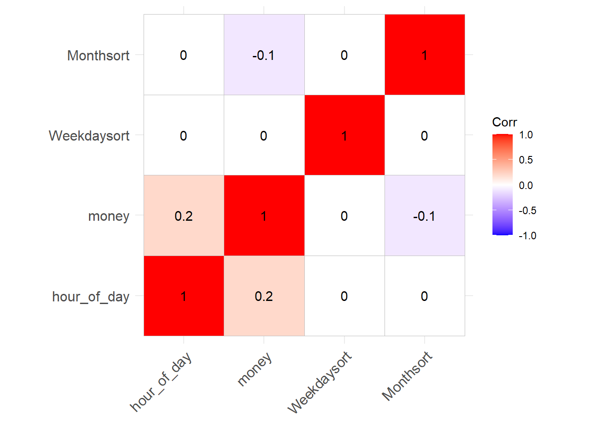
2.2.2 Numerical vs. categorical
2.2.2.1 Description
for (var in varNum) {
print(psych::describeBy(datos[, var], group = datos$MacOS))
}Warning in psych::describeBy(datos[, var], group = datos$MacOS): no grouping
variable requested vars n mean sd median trimmed mad min
X1 1 10127 739177606 36903783 717926358 733606202 9411100 708082083
max range skew kurtosis se
X1 828343083 120261000 1 -0.62 366716.5Warning in psych::describeBy(datos[, var], group = datos$MacOS): no grouping
variable requested vars n mean sd median trimmed mad min max range skew kurtosis se
X1 1 10127 46.33 8.02 46 46.35 8.9 26 73 47 -0.03 -0.29 0.08Warning in psych::describeBy(datos[, var], group = datos$MacOS): no grouping
variable requested vars n mean sd median trimmed mad min max range skew kurtosis se
X1 1 10127 2.35 1.3 2 2.37 1.48 0 5 5 -0.02 -0.68 0.01Warning in psych::describeBy(datos[, var], group = datos$MacOS): no grouping
variable requested vars n mean sd median trimmed mad min max range skew kurtosis se
X1 1 10127 35.93 7.99 36 35.99 5.93 13 56 43 -0.11 0.4 0.08Warning in psych::describeBy(datos[, var], group = datos$MacOS): no grouping
variable requested vars n mean sd median trimmed mad min max range skew kurtosis se
X1 1 10127 3.81 1.55 4 3.88 1.48 1 6 5 -0.16 -1.01 0.02Warning in psych::describeBy(datos[, var], group = datos$MacOS): no grouping
variable requested vars n mean sd median trimmed mad min max range skew kurtosis se
X1 1 10127 2.34 1.01 2 2.29 1.48 0 6 6 0.63 1.1 0.01Warning in psych::describeBy(datos[, var], group = datos$MacOS): no grouping
variable requested vars n mean sd median trimmed mad min max range skew kurtosis se
X1 1 10127 2.46 1.11 2 2.46 1.48 0 6 6 0.01 0 0.01Warning in psych::describeBy(datos[, var], group = datos$MacOS): no grouping
variable requested vars n mean sd median trimmed mad min max range skew
X1 1 10127 8631.95 9088.78 4549 6685.09 3844.38 1438.3 34516 33077.7 1.67
kurtosis se
X1 1.81 90.32Warning in psych::describeBy(datos[, var], group = datos$MacOS): no grouping
variable requested vars n mean sd median trimmed mad min max range skew
X1 1 10127 1162.81 814.99 1276 1148.5 876.22 0 2517 2517 -0.15
kurtosis se
X1 -1.15 8.1Warning in psych::describeBy(datos[, var], group = datos$MacOS): no grouping
variable requested vars n mean sd median trimmed mad min max range skew
X1 1 10127 7469.14 9090.69 3474 5514.94 3951.13 3 34516 34513 1.66
kurtosis se
X1 1.8 90.34Warning in psych::describeBy(datos[, var], group = datos$MacOS): no grouping
variable requested vars n mean sd median trimmed mad min max range skew kurtosis se
X1 1 10127 0.76 0.22 0.74 0.74 0.17 0 3.4 3.4 1.73 9.99 0Warning in psych::describeBy(datos[, var], group = datos$MacOS): no grouping
variable requested vars n mean sd median trimmed mad min max range skew
X1 1 10127 4404.09 3397.13 3899 3707.92 1939.24 510 18484 17974 2.04
kurtosis se
X1 3.89 33.76Warning in psych::describeBy(datos[, var], group = datos$MacOS): no grouping
variable requested vars n mean sd median trimmed mad min max range skew kurtosis se
X1 1 10127 64.86 23.47 67 64.3 25.2 10 139 129 0.15 -0.37 0.23Warning in psych::describeBy(datos[, var], group = datos$MacOS): no grouping
variable requested vars n mean sd median trimmed mad min max range skew kurtosis se
X1 1 10127 0.71 0.24 0.7 0.7 0.18 0 3.71 3.71 2.06 15.68 0Warning in psych::describeBy(datos[, var], group = datos$MacOS): no grouping
variable requested vars n mean sd median trimmed mad min max range skew kurtosis se
X1 1 10127 0.27 0.28 0.18 0.24 0.26 0 1 1 0.72 -0.8 0Warning in psych::describeBy(datos[, var], group = datos$MacOS): no grouping
variable requested vars n mean sd median trimmed mad min max range skew kurtosis se
X1 1 10127 0.16 0.37 0 0.08 0 0 1 1 1.85 1.42 0Warning in psych::describeBy(datos[, var], group = datos$MacOS): no grouping
variable requested vars n mean sd median trimmed mad min max range skew kurtosis se
X1 1 10127 0.84 0.37 1 0.92 0 0 1 1 -1.85 1.42 02.2.2.2 Graphic
for (varC in varCat) {
for (varN in varNum) {
# Histogram by group in ggplot2
grafico <- ggplot(datos, aes(x = get(varN), fill = get(varC))) +
geom_histogram(colour = "black",
lwd = 0.75,
linetype = 1,
position = "identity")
print(grafico)
}
}`stat_bin()` using `bins = 30`. Pick better value with `binwidth`.
`stat_bin()` using `bins = 30`. Pick better value with `binwidth`.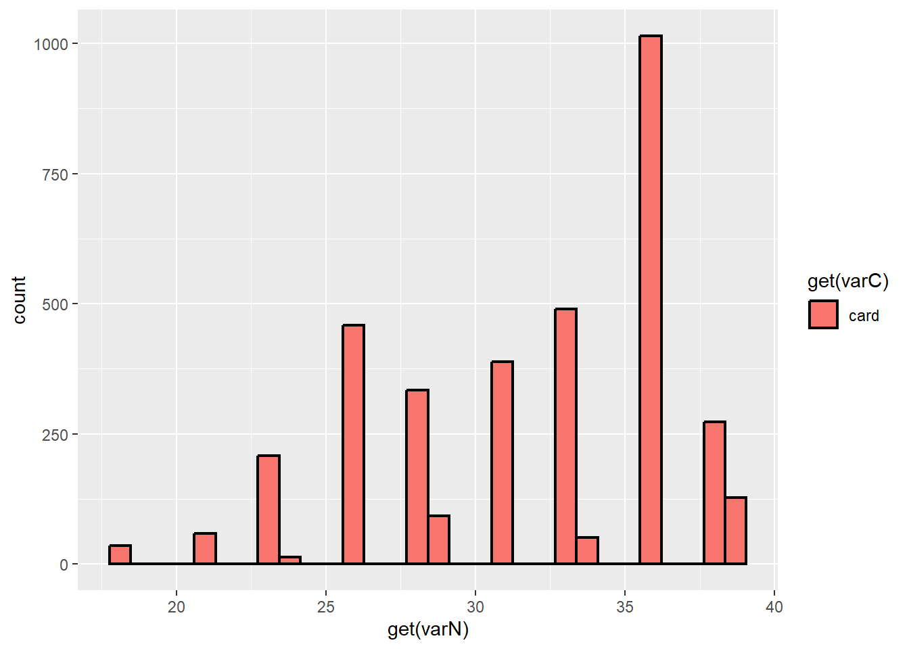
`stat_bin()` using `bins = 30`. Pick better value with `binwidth`.
`stat_bin()` using `bins = 30`. Pick better value with `binwidth`.
`stat_bin()` using `bins = 30`. Pick better value with `binwidth`.
`stat_bin()` using `bins = 30`. Pick better value with `binwidth`.
`stat_bin()` using `bins = 30`. Pick better value with `binwidth`.
`stat_bin()` using `bins = 30`. Pick better value with `binwidth`.
`stat_bin()` using `bins = 30`. Pick better value with `binwidth`.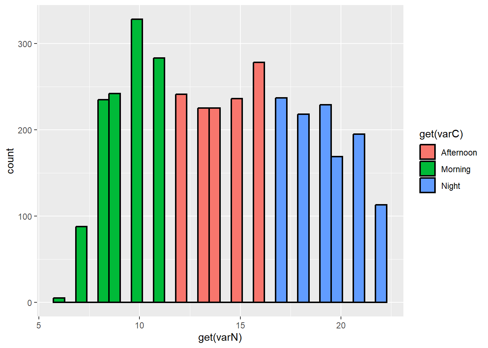
`stat_bin()` using `bins = 30`. Pick better value with `binwidth`.`stat_bin()` using `bins = 30`. Pick better value with `binwidth`.
`stat_bin()` using `bins = 30`. Pick better value with `binwidth`.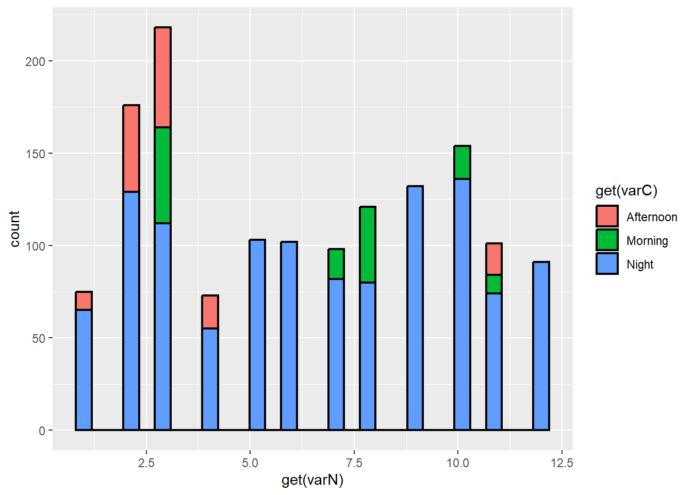
`stat_bin()` using `bins = 30`. Pick better value with `binwidth`.
`stat_bin()` using `bins = 30`. Pick better value with `binwidth`.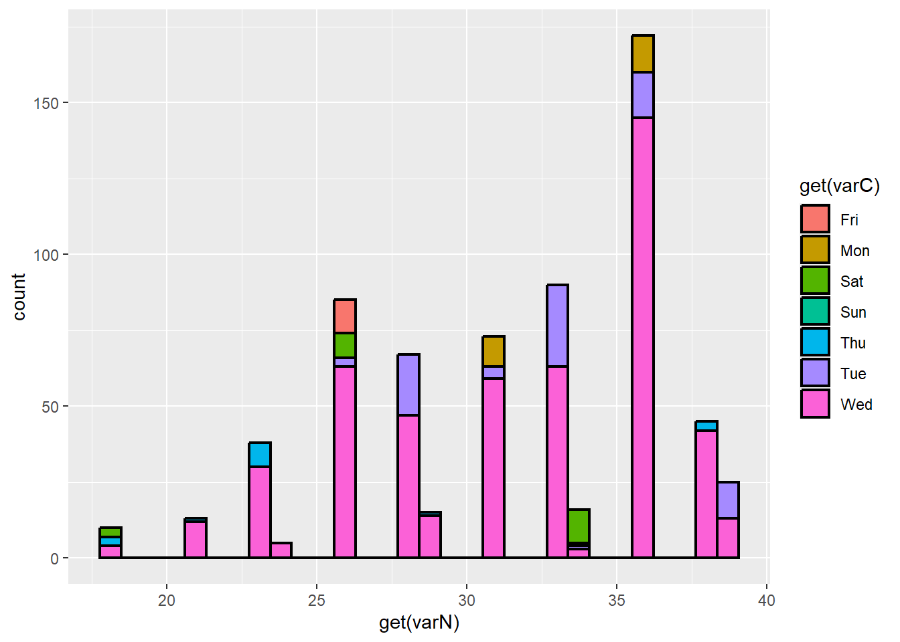
`stat_bin()` using `bins = 30`. Pick better value with `binwidth`.
`stat_bin()` using `bins = 30`. Pick better value with `binwidth`.
`stat_bin()` using `bins = 30`. Pick better value with `binwidth`.
`stat_bin()` using `bins = 30`. Pick better value with `binwidth`.`stat_bin()` using `bins = 30`. Pick better value with `binwidth`.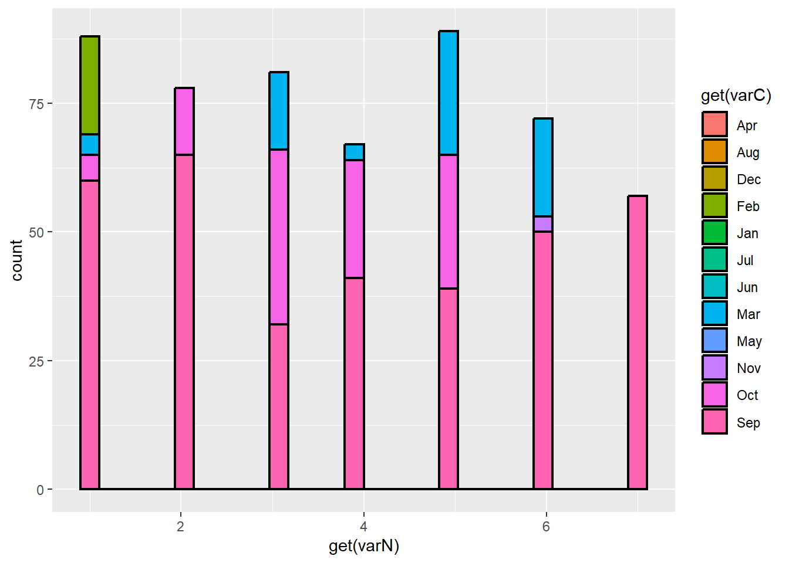
`stat_bin()` using `bins = 30`. Pick better value with `binwidth`.
`stat_bin()` using `bins = 30`. Pick better value with `binwidth`.`stat_bin()` using `bins = 30`. Pick better value with `binwidth`.`stat_bin()` using `bins = 30`. Pick better value with `binwidth`.`stat_bin()` using `bins = 30`. Pick better value with `binwidth`.`stat_bin()` using `bins = 30`. Pick better value with `binwidth`.`stat_bin()` using `bins = 30`. Pick better value with `binwidth`.`stat_bin()` using `bins = 30`. Pick better value with `binwidth`.`stat_bin()` using `bins = 30`. Pick better value with `binwidth`.`stat_bin()` using `bins = 30`. Pick better value with `binwidth`.`stat_bin()` using `bins = 30`. Pick better value with `binwidth`.
`stat_bin()` using `bins = 30`. Pick better value with `binwidth`.`stat_bin()` using `bins = 30`. Pick better value with `binwidth`.`stat_bin()` using `bins = 30`. Pick better value with `binwidth`.`stat_bin()` using `bins = 30`. Pick better value with `binwidth`.`stat_bin()` using `bins = 30`. Pick better value with `binwidth`.`stat_bin()` using `bins = 30`. Pick better value with `binwidth`.`stat_bin()` using `bins = 30`. Pick better value with `binwidth`.`stat_bin()` using `bins = 30`. Pick better value with `binwidth`.`stat_bin()` using `bins = 30`. Pick better value with `binwidth`.`stat_bin()` using `bins = 30`. Pick better value with `binwidth`.`stat_bin()` using `bins = 30`. Pick better value with `binwidth`.`stat_bin()` using `bins = 30`. Pick better value with `binwidth`.`stat_bin()` using `bins = 30`. Pick better value with `binwidth`.`stat_bin()` using `bins = 30`. Pick better value with `binwidth`.`stat_bin()` using `bins = 30`. Pick better value with `binwidth`.`stat_bin()` using `bins = 30`. Pick better value with `binwidth`.`stat_bin()` using `bins = 30`. Pick better value with `binwidth`.`stat_bin()` using `bins = 30`. Pick better value with `binwidth`.`stat_bin()` using `bins = 30`. Pick better value with `binwidth`.`stat_bin()` using `bins = 30`. Pick better value with `binwidth`.`stat_bin()` using `bins = 30`. Pick better value with `binwidth`.`stat_bin()` using `bins = 30`. Pick better value with `binwidth`.`stat_bin()` using `bins = 30`. Pick better value with `binwidth`.`stat_bin()` using `bins = 30`. Pick better value with `binwidth`.`stat_bin()` using `bins = 30`. Pick better value with `binwidth`.`stat_bin()` using `bins = 30`. Pick better value with `binwidth`.`stat_bin()` using `bins = 30`. Pick better value with `binwidth`.`stat_bin()` using `bins = 30`. Pick better value with `binwidth`.`stat_bin()` using `bins = 30`. Pick better value with `binwidth`.
`stat_bin()` using `bins = 30`. Pick better value with `binwidth`.`stat_bin()` using `bins = 30`. Pick better value with `binwidth`.`stat_bin()` using `bins = 30`. Pick better value with `binwidth`.`stat_bin()` using `bins = 30`. Pick better value with `binwidth`.`stat_bin()` using `bins = 30`. Pick better value with `binwidth`.`stat_bin()` using `bins = 30`. Pick better value with `binwidth`.
`stat_bin()` using `bins = 30`. Pick better value with `binwidth`.`stat_bin()` using `bins = 30`. Pick better value with `binwidth`.`stat_bin()` using `bins = 30`. Pick better value with `binwidth`.`stat_bin()` using `bins = 30`. Pick better value with `binwidth`.`stat_bin()` using `bins = 30`. Pick better value with `binwidth`.`stat_bin()` using `bins = 30`. Pick better value with `binwidth`.`stat_bin()` using `bins = 30`. Pick better value with `binwidth`.`stat_bin()` using `bins = 30`. Pick better value with `binwidth`.`stat_bin()` using `bins = 30`. Pick better value with `binwidth`.`stat_bin()` using `bins = 30`. Pick better value with `binwidth`.`stat_bin()` using `bins = 30`. Pick better value with `binwidth`.`stat_bin()` using `bins = 30`. Pick better value with `binwidth`.`stat_bin()` using `bins = 30`. Pick better value with `binwidth`.`stat_bin()` using `bins = 30`. Pick better value with `binwidth`.`stat_bin()` using `bins = 30`. Pick better value with `binwidth`.`stat_bin()` using `bins = 30`. Pick better value with `binwidth`.`stat_bin()` using `bins = 30`. Pick better value with `binwidth`.`stat_bin()` using `bins = 30`. Pick better value with `binwidth`.`stat_bin()` using `bins = 30`. Pick better value with `binwidth`.`stat_bin()` using `bins = 30`. Pick better value with `binwidth`.`stat_bin()` using `bins = 30`. Pick better value with `binwidth`.`stat_bin()` using `bins = 30`. Pick better value with `binwidth`.`stat_bin()` using `bins = 30`. Pick better value with `binwidth`.`stat_bin()` using `bins = 30`. Pick better value with `binwidth`.`stat_bin()` using `bins = 30`. Pick better value with `binwidth`.`stat_bin()` using `bins = 30`. Pick better value with `binwidth`.`stat_bin()` using `bins = 30`. Pick better value with `binwidth`.`stat_bin()` using `bins = 30`. Pick better value with `binwidth`.`stat_bin()` using `bins = 30`. Pick better value with `binwidth`.`stat_bin()` using `bins = 30`. Pick better value with `binwidth`.`stat_bin()` using `bins = 30`. Pick better value with `binwidth`.`stat_bin()` using `bins = 30`. Pick better value with `binwidth`.`stat_bin()` using `bins = 30`. Pick better value with `binwidth`.`stat_bin()` using `bins = 30`. Pick better value with `binwidth`.`stat_bin()` using `bins = 30`. Pick better value with `binwidth`.`stat_bin()` using `bins = 30`. Pick better value with `binwidth`.`stat_bin()` using `bins = 30`. Pick better value with `binwidth`.
2.2.3 Categorical vs. categorical
2.2.3.1 Description
for (varc1 in varCat) {
for (varc2 in varCat) {
if (varc1 != varc2) {
prop_table <- prop.table(table(datos[, varc1], datos[, varc2]))
cat("=============", varc1, " vs. ", varc2, "=========================\n")
print(prop_table)
}
}
}============= Attrition_Flag vs. Gender =========================
F M
Attrited Customer 0.09183371 0.06882591
Existing Customer 0.43724696 0.40209341
============= Attrition_Flag vs. Education_Level =========================
College Doctorate Graduate High School
Attrited Customer 0.015206873 0.009380863 0.048089266 0.030216254
Existing Customer 0.084822751 0.035153550 0.260787992 0.168559297
Post-Graduate Uneducated Unknown
Attrited Customer 0.009084625 0.023402785 0.025278957
Existing Customer 0.041868273 0.123432408 0.124716105
============= Attrition_Flag vs. Marital_Status =========================
Divorced Married Single Unknown
Attrited Customer 0.01194826 0.07001086 0.06596228 0.01273822
Existing Customer 0.06191370 0.39281130 0.32339291 0.06122247
============= Attrition_Flag vs. Income_Category =========================
$120K + $40K - $60K $60K - $80K $80K - $120K
Attrited Customer 0.01244199 0.02676015 0.01866298 0.02389651
Existing Customer 0.05934630 0.14999506 0.11977881 0.12767848
Less than $40K Unknown
Attrited Customer 0.06043251 0.01846549
Existing Customer 0.29120174 0.09133998
============= Attrition_Flag vs. Card_Category =========================
Blue Gold Platinum Silver
Attrited Customer 0.1499950627 0.0020736645 0.0004937296 0.0080971660
Existing Customer 0.7817715019 0.0093808630 0.0014811889 0.0467068233
============= Gender vs. Attrition_Flag =========================
Attrited Customer Existing Customer
F 0.09183371 0.43724696
M 0.06882591 0.40209341
============= Gender vs. Education_Level =========================
College Doctorate Graduate High School Post-Graduate Uneducated
F 0.05253283 0.02537770 0.16490570 0.10151081 0.02597018 0.07860176
M 0.04749679 0.01915671 0.14397156 0.09726474 0.02498272 0.06823344
Unknown
F 0.08018169
M 0.06981337
============= Gender vs. Marital_Status =========================
Divorced Married Single Unknown
F 0.03969586 0.24202627 0.20983509 0.03752345
M 0.03416609 0.22079589 0.17952009 0.03643725
============= Gender vs. Income_Category =========================
$120K + $40K - $60K $60K - $80K $80K - $120K Less than $40K Unknown
F 0.000000000 0.100128370 0.000000000 0.000000000 0.324281623 0.104670682
M 0.071788289 0.076626839 0.138441789 0.151574998 0.027352622 0.005134788
============= Gender vs. Card_Category =========================
Blue Gold Platinum Silver
F 0.5037029723 0.0037523452 0.0008887133 0.0207366446
M 0.4280635924 0.0077021823 0.0010862052 0.0340673447
============= Education_Level vs. Attrition_Flag =========================
Attrited Customer Existing Customer
College 0.015206873 0.084822751
Doctorate 0.009380863 0.035153550
Graduate 0.048089266 0.260787992
High School 0.030216254 0.168559297
Post-Graduate 0.009084625 0.041868273
Uneducated 0.023402785 0.123432408
Unknown 0.025278957 0.124716105
============= Education_Level vs. Gender =========================
F M
College 0.05253283 0.04749679
Doctorate 0.02537770 0.01915671
Graduate 0.16490570 0.14397156
High School 0.10151081 0.09726474
Post-Graduate 0.02597018 0.02498272
Uneducated 0.07860176 0.06823344
Unknown 0.08018169 0.06981337
============= Education_Level vs. Marital_Status =========================
Divorced Married Single Unknown
College 0.008492150 0.046114348 0.038115928 0.007307199
Doctorate 0.003554853 0.020242915 0.017971759 0.002764886
Graduate 0.022217834 0.146045226 0.118198874 0.022415325
High School 0.012639479 0.093709884 0.077219315 0.015206873
Post-Graduate 0.004048583 0.023995260 0.018662980 0.004246075
Uneducated 0.013429446 0.064777328 0.057865113 0.010763306
Unknown 0.009479609 0.067937198 0.061321220 0.011257036
============= Education_Level vs. Income_Category =========================
$120K + $40K - $60K $60K - $80K $80K - $120K Less than $40K
College 0.006912215 0.018070505 0.013034462 0.017280537 0.034067345
Doctorate 0.003653599 0.006912215 0.005826010 0.005628518 0.015601856
Graduate 0.020144169 0.054606497 0.041670781 0.047200553 0.112471611
High School 0.014515651 0.035054804 0.030315000 0.030413745 0.066258517
Post-Graduate 0.002962378 0.010960798 0.007603436 0.007998420 0.016786808
Uneducated 0.011750765 0.024587736 0.019255456 0.021427866 0.051545374
Unknown 0.011849511 0.026562654 0.020736645 0.021625358 0.054902735
Unknown
College 0.010664560
Doctorate 0.006912215
Graduate 0.032783648
High School 0.022217834
Post-Graduate 0.004641059
Uneducated 0.018267996
Unknown 0.014318159
============= Education_Level vs. Card_Category =========================
Blue Gold Platinum Silver
College 9.282117e-02 1.481189e-03 0.000000e+00 5.727264e-03
Doctorate 4.167078e-02 4.937296e-04 1.974919e-04 2.172410e-03
Graduate 2.862644e-01 3.554853e-03 7.899674e-04 1.826800e-02
High School 1.864323e-01 2.567394e-03 9.874593e-05 9.677101e-03
Post-Graduate 4.700306e-02 4.937296e-04 2.962378e-04 3.159870e-03
Uneducated 1.373556e-01 1.086205e-03 2.962378e-04 8.097166e-03
Unknown 1.402192e-01 1.777427e-03 2.962378e-04 7.702182e-03
============= Marital_Status vs. Attrition_Flag =========================
Attrited Customer Existing Customer
Divorced 0.01194826 0.06191370
Married 0.07001086 0.39281130
Single 0.06596228 0.32339291
Unknown 0.01273822 0.06122247
============= Marital_Status vs. Gender =========================
F M
Divorced 0.03969586 0.03416609
Married 0.24202627 0.22079589
Single 0.20983509 0.17952009
Unknown 0.03752345 0.03643725
============= Marital_Status vs. Education_Level =========================
College Doctorate Graduate High School Post-Graduate
Divorced 0.008492150 0.003554853 0.022217834 0.012639479 0.004048583
Married 0.046114348 0.020242915 0.146045226 0.093709884 0.023995260
Single 0.038115928 0.017971759 0.118198874 0.077219315 0.018662980
Unknown 0.007307199 0.002764886 0.022415325 0.015206873 0.004246075
Uneducated Unknown
Divorced 0.013429446 0.009479609
Married 0.064777328 0.067937198
Single 0.057865113 0.061321220
Unknown 0.010763306 0.011257036
============= Marital_Status vs. Income_Category =========================
$120K + $40K - $60K $60K - $80K $80K - $120K Less than $40K
Divorced 0.005134788 0.013626938 0.010664560 0.010170830 0.025081465
Married 0.034956058 0.080576676 0.065271058 0.072578256 0.160758369
Single 0.027056384 0.069517132 0.052434087 0.055396465 0.141107929
Unknown 0.004641059 0.013034462 0.010072085 0.013429446 0.024686482
Unknown
Divorced 0.009183371
Married 0.048681742
Single 0.043843191
Unknown 0.008097166
============= Marital_Status vs. Card_Category =========================
Blue Gold Platinum Silver
Divorced 6.872717e-02 4.937296e-04 9.874593e-05 4.542313e-03
Married 4.377407e-01 4.048583e-03 6.912215e-04 2.034166e-02
Single 3.578552e-01 5.727264e-03 9.874593e-04 2.478523e-02
Unknown 6.744347e-02 1.184951e-03 1.974919e-04 5.134788e-03
============= Income_Category vs. Attrition_Flag =========================
Attrited Customer Existing Customer
$120K + 0.01244199 0.05934630
$40K - $60K 0.02676015 0.14999506
$60K - $80K 0.01866298 0.11977881
$80K - $120K 0.02389651 0.12767848
Less than $40K 0.06043251 0.29120174
Unknown 0.01846549 0.09133998
============= Income_Category vs. Gender =========================
F M
$120K + 0.000000000 0.071788289
$40K - $60K 0.100128370 0.076626839
$60K - $80K 0.000000000 0.138441789
$80K - $120K 0.000000000 0.151574998
Less than $40K 0.324281623 0.027352622
Unknown 0.104670682 0.005134788
============= Income_Category vs. Education_Level =========================
College Doctorate Graduate High School Post-Graduate
$120K + 0.006912215 0.003653599 0.020144169 0.014515651 0.002962378
$40K - $60K 0.018070505 0.006912215 0.054606497 0.035054804 0.010960798
$60K - $80K 0.013034462 0.005826010 0.041670781 0.030315000 0.007603436
$80K - $120K 0.017280537 0.005628518 0.047200553 0.030413745 0.007998420
Less than $40K 0.034067345 0.015601856 0.112471611 0.066258517 0.016786808
Unknown 0.010664560 0.006912215 0.032783648 0.022217834 0.004641059
Uneducated Unknown
$120K + 0.011750765 0.011849511
$40K - $60K 0.024587736 0.026562654
$60K - $80K 0.019255456 0.020736645
$80K - $120K 0.021427866 0.021625358
Less than $40K 0.051545374 0.054902735
Unknown 0.018267996 0.014318159
============= Income_Category vs. Marital_Status =========================
Divorced Married Single Unknown
$120K + 0.005134788 0.034956058 0.027056384 0.004641059
$40K - $60K 0.013626938 0.080576676 0.069517132 0.013034462
$60K - $80K 0.010664560 0.065271058 0.052434087 0.010072085
$80K - $120K 0.010170830 0.072578256 0.055396465 0.013429446
Less than $40K 0.025081465 0.160758369 0.141107929 0.024686482
Unknown 0.009183371 0.048681742 0.043843191 0.008097166
============= Income_Category vs. Card_Category =========================
Blue Gold Platinum Silver
$120K + 6.369112e-02 1.777427e-03 3.949837e-04 5.924756e-03
$40K - $60K 1.653994e-01 1.481189e-03 9.874593e-05 9.775847e-03
$60K - $80K 1.257036e-01 2.863632e-03 3.949837e-04 9.479609e-03
$80K - $120K 1.377506e-01 2.073664e-03 1.974919e-04 1.155327e-02
Less than $40K 3.360324e-01 2.369902e-03 3.949837e-04 1.283697e-02
Unknown 1.031895e-01 8.887133e-04 4.937296e-04 5.233534e-03
============= Card_Category vs. Attrition_Flag =========================
Attrited Customer Existing Customer
Blue 0.1499950627 0.7817715019
Gold 0.0020736645 0.0093808630
Platinum 0.0004937296 0.0014811889
Silver 0.0080971660 0.0467068233
============= Card_Category vs. Gender =========================
F M
Blue 0.5037029723 0.4280635924
Gold 0.0037523452 0.0077021823
Platinum 0.0008887133 0.0010862052
Silver 0.0207366446 0.0340673447
============= Card_Category vs. Education_Level =========================
College Doctorate Graduate High School Post-Graduate
Blue 9.282117e-02 4.167078e-02 2.862644e-01 1.864323e-01 4.700306e-02
Gold 1.481189e-03 4.937296e-04 3.554853e-03 2.567394e-03 4.937296e-04
Platinum 0.000000e+00 1.974919e-04 7.899674e-04 9.874593e-05 2.962378e-04
Silver 5.727264e-03 2.172410e-03 1.826800e-02 9.677101e-03 3.159870e-03
Uneducated Unknown
Blue 1.373556e-01 1.402192e-01
Gold 1.086205e-03 1.777427e-03
Platinum 2.962378e-04 2.962378e-04
Silver 8.097166e-03 7.702182e-03
============= Card_Category vs. Marital_Status =========================
Divorced Married Single Unknown
Blue 6.872717e-02 4.377407e-01 3.578552e-01 6.744347e-02
Gold 4.937296e-04 4.048583e-03 5.727264e-03 1.184951e-03
Platinum 9.874593e-05 6.912215e-04 9.874593e-04 1.974919e-04
Silver 4.542313e-03 2.034166e-02 2.478523e-02 5.134788e-03
============= Card_Category vs. Income_Category =========================
$120K + $40K - $60K $60K - $80K $80K - $120K Less than $40K
Blue 6.369112e-02 1.653994e-01 1.257036e-01 1.377506e-01 3.360324e-01
Gold 1.777427e-03 1.481189e-03 2.863632e-03 2.073664e-03 2.369902e-03
Platinum 3.949837e-04 9.874593e-05 3.949837e-04 1.974919e-04 3.949837e-04
Silver 5.924756e-03 9.775847e-03 9.479609e-03 1.155327e-02 1.283697e-02
Unknown
Blue 1.031895e-01
Gold 8.887133e-04
Platinum 4.937296e-04
Silver 5.233534e-032.2.3.2 Graphic
for (varc1 in varCat) {
for (varc2 in varCat) {
if (varc1 != varc2) {
prop_table <- prop.table(table(datos[, varc1], datos[, varc2]))
barplot(prop_table, beside = TRUE)
}
}
}


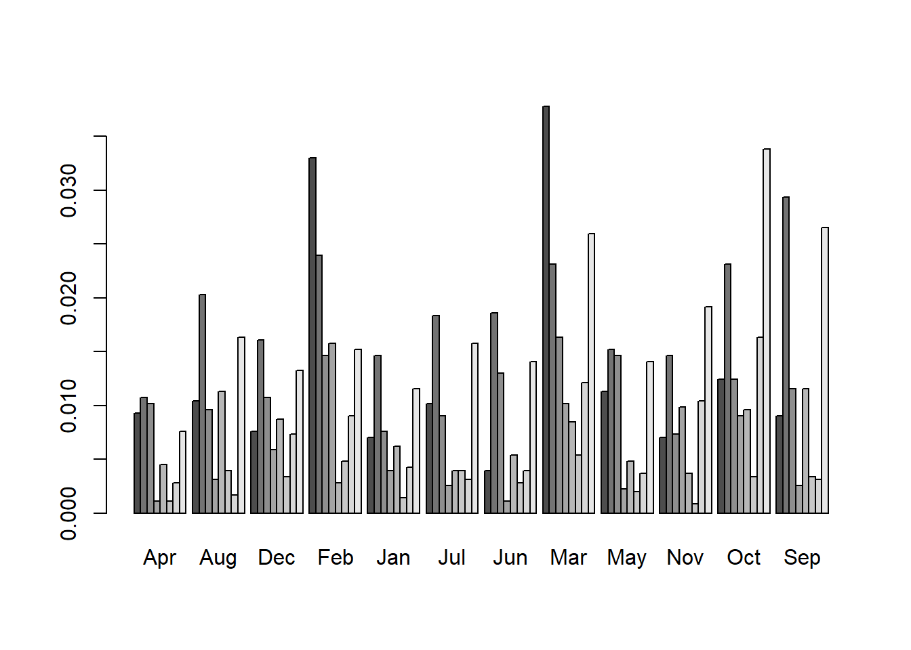

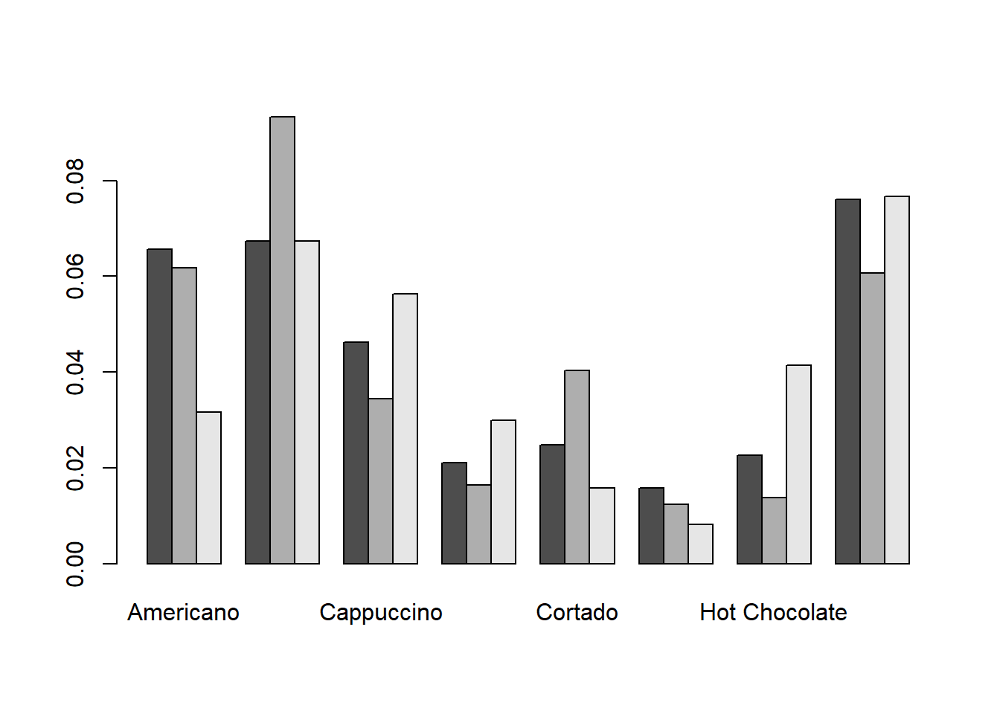


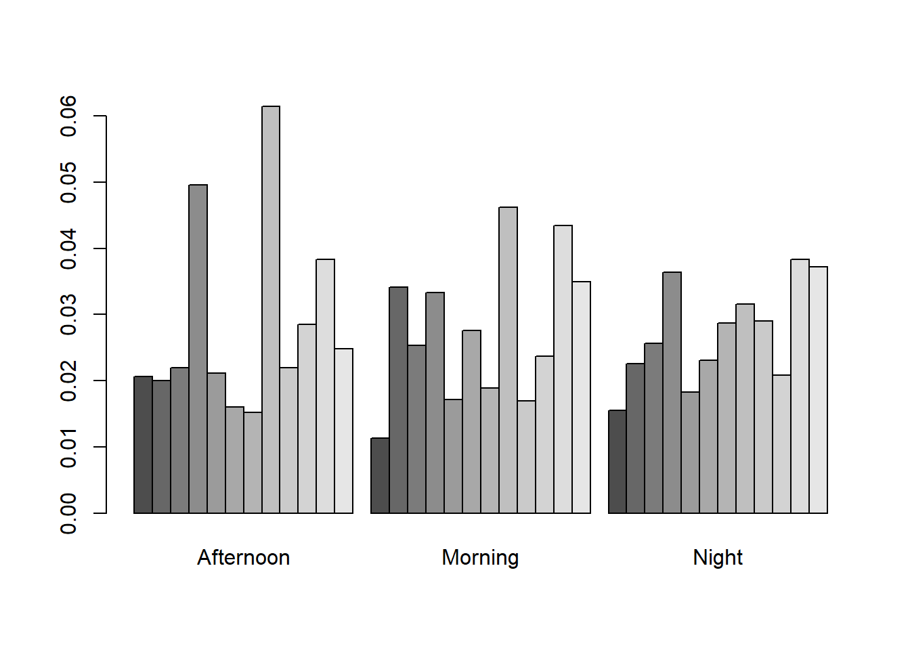


3 Preprocessing: Data cleaning
3.1 Features selection
3.2 Outiliers
3.3 Imputation
3.4 New Variables
Esta web está creada por Dante Conti y Sergi Ramírez, (c) 2024